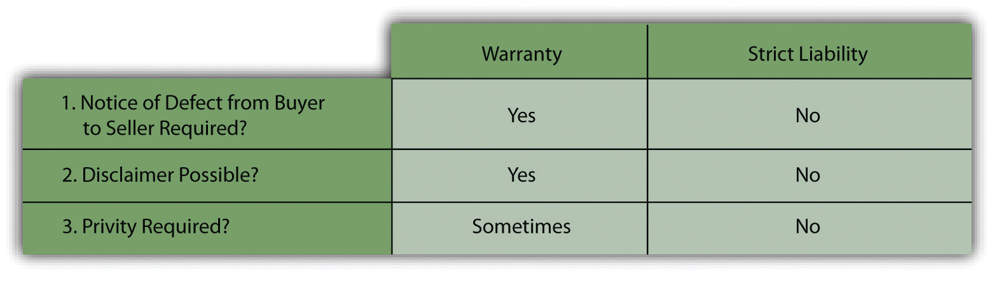

The warranties grounded in the Uniform Commercial Code (UCC) are often ineffective in assuring recovery for a plaintiff’s injuries. The notice requirements and the ability of a seller to disclaim the warranties remain bothersome problems, as does the privity requirement in those states that continue to adhere to it.
Negligence as a products-liability theory obviates any privity problems, but negligence comes with a number of familiar defenses and with the problems of preemption.
To overcome the obstacles, judges have gone beyond the commercial statutes and the ancient concepts of negligence. They have fashioned a tort theory of products liability based on the principle of strict products liability. One court expressed the rationale for the development of the concept as follows: “The rule of strict liability for defective products is an example of necessary paternalism judicially shifting risk of loss by application of tort doctrine because [the UCC] scheme fails to adequately cover the situation. Judicial paternalism is to loss shifting what garlic is to a stew—sometimes necessary to give full flavor to statutory law, always distinctly noticeable in its result, overwhelmingly counterproductive if excessive, and never an end in itself.”Kaiser Steel Corp. v. Westinghouse Electric Corp., 127 Cal. Rptr. 838 (Cal. 1976). Paternalism or not, strict liability has become a very important legal theory in products-liability cases.
The formulation of strict liability that most courts use is Section 402A of the Restatement of Torts (Second), set out here in full:
(1) One who sells any product in a defective condition unreasonably dangerous to the user or consumer or to his property is subject to liability for physical harm thereby caused to the ultimate user or consumer, or to his property, if
(a) the seller is engaged in the business of selling such a product, and
(b) it is expected to and does reach the user or consumer without substantial change in the condition in which it is sold.
(2) This rule applies even though
(a) the seller has exercised all possible care in the preparation and sale of his product, and
(b) the user or consumer has not bought the product from or entered into any contractual relation with the seller.
Section 402A of the Restatement avoids the warranty booby traps. It states a rule of law not governed by the UCC, so limitations and exclusions in warranties will not apply to a suit based on the Restatement theory. And the consumer is under no obligation to give notice to the seller within a reasonable time of any injuries. Privity is not a requirement; the language of the Restatement says it applies to “the user or consumer,” but courts have readily found that bystanders in various situations are entitled to bring actions under Restatement, Section 402A. The formulation of strict liability, though, is limited to physical harm. Many courts have held that a person who suffers economic loss must resort to warranty law.
Strict liability avoids some negligence traps, too. No proof of negligence is required. See Figure 17.4 "Major Difference between Warranty and Strict Liability".
Figure 17.4 Major Difference between Warranty and Strict Liability
Sales of goods but not sales of services are covered under the Restatement, Section 402A. Furthermore, the plaintiff will not prevail if the product was safe for normal handling and consumption when sold. A glass soda bottle that is properly capped is not in a defective condition merely because it can be broken if the consumer should happen to drop it, making the jagged glass dangerous. Chocolate candy bars are not defective merely because you can become ill by eating too many of them at once. On the other hand, a seller would be liable for a product defectively packaged, so that it could explode or deteriorate and change its chemical composition. A product can also be in a defective condition if there is danger that could come from an anticipated wrongful use, such as a drug that is safe only when taken in limited doses. Under those circumstances, failure to place an adequate dosage warning on the container makes the product defective.
The plaintiff bears the burden of proving that the product is in a defective condition, and this burden can be difficult to meet. Many products are the result of complex feats of engineering. Expert witnesses are necessary to prove that the products were defectively manufactured, and these are not always easy to come by. This difficulty of proof is one reason why many cases raise the failure to warn as the dispositive issue, since in the right case that issue is far easier to prove. The Anderson case (detailed in the exercises at the end of this chapter) demonstrates that the plaintiff cannot prevail under strict liability merely because he was injured. It is not the fact of injury that is dispositive but the defective condition of the product.
The product must be not merely dangerous but unreasonably dangerous. Most products have characteristics that make them dangerous in certain circumstances. As the Restatement commentators note, “Good whiskey is not unreasonably dangerous merely because it will make some people drunk, and is especially dangerous to alcoholics; but bad whiskey, containing a dangerous amount of fuel oil, is unreasonably dangerous.…Good butter is not unreasonably dangerous merely because, if such be the case, it deposits cholesterol in the arteries and leads to heart attacks; but bad butter, contaminated with poisonous fish oil, is unreasonably dangerous.”Restatement (Second) of Contracts, Section 402A(i). Under Section 402A, “the article sold must be dangerous to an extent beyond that which would be contemplated by the ordinary consumer who purchases it, with the ordinary knowledge common to the community as to its characteristics. ”
Even high risks of danger are not necessarily unreasonable. Some products are unavoidably unsafe; rabies vaccines, for example, can cause dreadful side effects. But the disease itself, almost always fatal, is worse. A product is unavoidably unsafe when it cannot be made safe for its intended purpose given the present state of human knowledge. Because important benefits may flow from the product’s use, its producer or seller ought not to be held liable for its danger.
However, the failure to warn a potential user of possible hazards can make a product defective under Restatement, Section 402A, whether unreasonably dangerous or even unavoidably unsafe. The dairy farmer need not warn those with common allergies to eggs, because it will be presumed that the person with an allergic reaction to common foodstuffs will be aware of them. But when the product contains an ingredient that could cause toxic effects in a substantial number of people and its danger is not widely known (or if known, is not an ingredient that would commonly be supposed to be in the product), the lack of a warning could make the product unreasonably dangerous within the meaning of Restatement, Section 402A. Many of the suits brought by asbestos workers charged exactly this point; The utility of an insulation product containing asbestos may outweigh the known or foreseeable risk to the insulation workers and thus justify its marketing. The product could still be unreasonably dangerous, however, if unaccompanied by adequate warnings. An insulation worker, no less than any other product user, has a right to decide whether to expose himself to the risk.Borel v. Fibreboard Paper Products Corp., 493 F.Zd 1076 (5th Cir. 1973). This rule of law came to haunt the Manville Corporation: it was so burdened with lawsuits, brought and likely to be brought for its sale of asbestosa known carcinogenthat it declared Chapter 11 bankruptcy in 1982 and shucked its liability.In re Johns-Manville Corp., 36 R.R. 727 (So. Dist. N.Y. 1984).
Restatement, Section 402A(1)(a), limits liability to sellers “engaged in the business of selling such a product.” The rule is intended to apply to people and entities engaged in business, not to casual one-time sellers. The business need not be solely in the defective product; a movie theater that sells popcorn with a razor blade inside is no less liable than a grocery store that does so. But strict liability under this rule does not attach to a private individual who sells his own automobile. In this sense, Restatement, Section 402A, is analogous to the UCC’s limitation of the warranty of merchantability to the merchant.
The requirement that the defendant be in the business of selling gets to the rationale for the whole concept of strict products liability: businesses should shoulder the cost of injuries because they are in the best position to spread the risk and distribute the expense among the public. This same policy has been the rationale for holding bailors and lessors liable for defective equipment just as if they had been sellers.Martin v. Ryder Rental, Inc., 353 A.2d 581 (Del. 1976).
Restatement, Section 402A(1)(b), limits strict liability to those defective products that are expected to and do reach the user or consumer without substantial change in the condition in which the products are sold. A product that is safe when delivered cannot subject the seller to liability if it is subsequently mishandled or changed. The seller, however, must anticipate in appropriate cases that the product will be stored; faulty packaging or sterilization may be the grounds for liability if the product deteriorates before being used.
Strict liability applies under the Restatement rule even though “the seller has exercised all possible care in the preparation and sale of his product.” This is the crux of “strict liability” and distinguishes it from the conventional theory of negligence. It does not matter how reasonably the seller acted or how exemplary is a manufacturer’s quality control system—what matters is whether the product was defective and the user injured as a result. Suppose an automated bottle factory manufactures 1,000 bottles per hour under exacting standards, with a rigorous and costly quality-control program designed to weed out any bottles showing even an infinitesimal amount of stress. The plant is “state of the art,” and its computerized quality-control operation is the best in the world. It regularly detects the one out of every 10,000 bottles that analysis has shown will be defective. Despite this intense effort, it proves impossible to weed out every defective bottle; one out of one million, say, will still escape detection. Assume that a bottle, filled with soda, finds its way into a consumer’s home, explodes when handled, sends glass shards into his eye, and blinds him. Under negligence, the bottler has no liability; under strict liability, the bottler will be liable to the consumer.
Under Restatement, Section 402A(2)(b), strict liability applies even though the user has not purchased the product from the seller nor has the user entered into any contractual relation with the seller. In short, privity is abolished and the injured user may use the theory of strict liability against manufacturers and wholesalers as well as retailers. Here, however, the courts have varied in their approaches; the trend has been to allow bystanders recovery. The Restatement explicitly leaves open the question of the bystander’s right to recover under strict liability.
Strict liability is liability without proof of negligence and without privity. It would seem that strict liability is the “holy grail” of products-liability lawyers: the complete answer. Well, no, it’s not the holy grail. It is certainly true that 402A abolishes the contractual problems of warranty. Restatement, Section 402A, Comment m, says,
The rule stated in this Section is not governed by the provisions of the Uniform Commercial Code, as to warranties; and it is not affected by limitations on the scope and content of warranties, or by limitation to “buyer” and “seller” in those statutes. Nor is the consumer required to give notice to the seller of his injury within a reasonable time after it occurs, as provided by the Uniform Act. The consumer’s cause of action does not depend upon the validity of his contract with the person from whom he acquires the product, and it is not affected by any disclaimer or other agreement, whether it be between the seller and his immediate buyer, or attached to and accompanying the product into the consumer’s hands. In short, “warranty” must be given a new and different meaning if it is used in connection with this Section. It is much simpler to regard the liability here stated as merely one of strict liability in tort.
Inherent in the Restatement’s language is the obvious point that if the product has been altered, losses caused by injury are not the manufacturer’s liability. Beyond that there are still some limitations to strict liability.
Comment m specifically says the cause of action under Restatement, Section 402A, is not affected by disclaimer. But in nonconsumer cases, courts have allowed clear and specific disclaimers. In 1969, the Ninth Circuit observed: “In Kaiser Steel Corp. the [California Supreme Court] court upheld the dismissal of a strict liability action when the parties, dealing from positions of relatively equal economic strength, contracted in a commercial setting to limit the defendant’s liability. The court went on to hold that in this situation the strict liability cause of action does not apply at all. In reaching this conclusion, the court in Kaiser reasoned that strict liability ‘is designed to encompass situations in which the principles of sales warranties serve their purpose “fitfully at best.”’ [Citation]” It concluded that in such commercial settings the UCC principles work well and “to apply the tort doctrines of products liability will displace the statutory law rather than bring out its full flavor.”Idaho Power Co. v. Westinghouse Electric Corp., 596 F.2d 924, 9CA (1979).
Conduct by the plaintiff herself may defeat recovery in two circumstances.
Courts have allowed the defense of assumption of the risk in strict products-liability cases. A plaintiff assumes the risk of injury, thus establishing defense to claim of strict products liability, when he is aware the product is defective, knows the defect makes the product unreasonably dangerous, has reasonable opportunity to elect whether to expose himself to the danger, and nevertheless proceeds to make use of the product. The rule makes sense.
Where the plaintiff does not know a use of the product is dangerous but nevertheless uses for an incorrect purpose, a defense arises, but only if such misuse was not foreseeable. If it was, the manufacturer should warn against that misuse. In Eastman v. Stanley Works, a carpenter used a framing hammer to drive masonry nails; the claw of the hammer broke off, striking him in the eye.Eastman v. Stanley Works, 907 N.E.2d 768 (Ohio App. 2009). He sued. The court held that while a defense does exist “where the product is used in a capacity which is unforeseeable by the manufacturer and completely incompatible with the product’s design…misuse of a product suggests a use which was unanticipated or unexpected by the product manufacturer, or unforeseeable and unanticipated [but] it was not the case that reasonable minds could only conclude that appellee misused the [hammer]. Though the plaintiff’s use of the hammer might have been unreasonable, unreasonable use is not a defense to a strict product-liability action or to a negligence action.”
The Restatement says recovery under strict liability is limited to “physical harm thereby caused to the ultimate user or consumer, or to his property,” but not other losses and not economic losses. In Atlas Air v. General Electric, a New York court held that the “economic loss rule” (no recovery for economic losses) barred strict products-liability and negligence claims by the purchaser of a used airplane against the airplane engine manufacturer for damage to the plane caused by an emergency landing necessitated by engine failure, where the purchaser merely alleged economic losses with respect to the plane itself, and not damages for personal injury (recovery for damage to the engine was allowed).Atlas Air v. General Electric, 16 A.D.3d 444 (N.Y.A.D. 2005).
But there are exceptions. In Duffin v. Idaho Crop Imp. Ass’n, the court recognized that a party generally owes no duty to exercise due care to avoid purely economic loss, but if there is a “special relationship” between the parties such that it would be equitable to impose such a duty, the duty will be imposed.Duffin v. Idaho Crop Imp. Ass’n, 895 P.2d 1195 (Idaho 1995). “In other words, there is an extremely limited group of cases where the law of negligence extends its protections to a party’s economic interest.”
The law develops. What seemed fitting in 1964 when the Restatement (Second) announced the state of the common-law rules for strict liability in Section 402A seemed, by 1997, not to be tracking common law entirely closely. The American Law Institute came out with the Restatement (Third) in that year. The Restatement changes some things. Most notably it abolishes the “unreasonably dangerous” test and substitutes a “risk-utility test.” That is, a product is not defective unless its riskiness outweighs its utility. More important, the Restatement (Third), Section 2, now requires the plaintiff to provide a reasonable alternative design to the product in question. In advancing a reasonable alternative design, the plaintiff is not required to offer a prototype product. The plaintiff must only show that the proposed alternative design exists and is superior to the product in question. The Restatement (Third) also makes it more difficult for plaintiffs to sue drug companies successfully. One legal scholar commented as follows on the Restatement (Third):
The provisions of the Third Restatement, if implemented by the courts, will establish a degree of fairness in the products liability arena. If courts adopt the Third Restatement’s elimination of the “consumer expectations test,” this change alone will strip juries of the ability to render decisions based on potentially subjective, capricious and unscientific opinions that a particular product design is unduly dangerous based on its performance in a single incident. More important, plaintiffs will be required to propose a reasonable alternative design to the product in question. Such a requirement will force plaintiffs to prove that a better product design exists other than in the unproven and untested domain of their experts’ imaginations.Quinlivan Wexler LLP, “The 3rd Restatement of Torts—Shaping the Future of Products Liability Law,” June 1, 1999, accessed March 1, 2011, http://library.findlaw.com/1999/Jun/1/127691.html.
Of course some people put more faith in juries than is evident here. The new Restatement has been adopted by a few jurisdictions and some cases the adopting jurisdictions incorporate some of its ideas, but courts appear reluctant to abandon familiar precedent.
Because the doctrines of breach of warranty and negligence did not provide adequate relief to those suffering damages or injuries in products-liability cases, beginning in the 1960s courts developed a new tort theory: strict products liability, restated in the Second Restatement, section 402A. Basically the doctrine says that if goods sold are unreasonably dangerous or defective, the merchant-seller will be liable for the immediate property loss and personal injuries caused thereby. But there remain obstacles to recovery even under this expanded concept of liability: disclaimers of liability have not completely been dismissed, the plaintiff’s conduct or changes to the goods may limit recovery, and—with some exceptions—the remedies available are limited to personal injury (and damage to the goods themselves); economic loss is not recoverable. Almost forty years of experience with the Second Restatement’s section on strict liability has seen changes in the law, and the Third Restatement introduces those, but it has not been widely accepted yet.